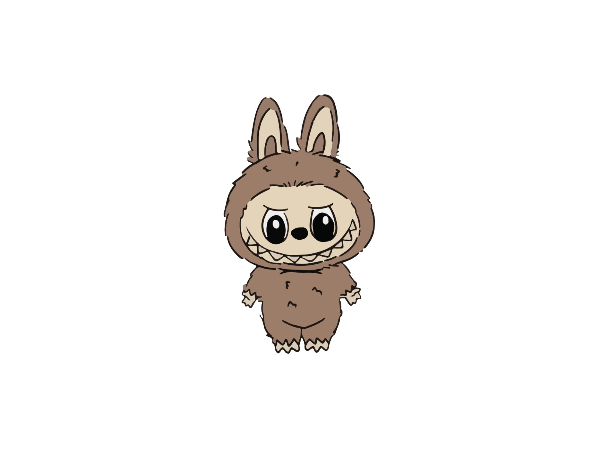
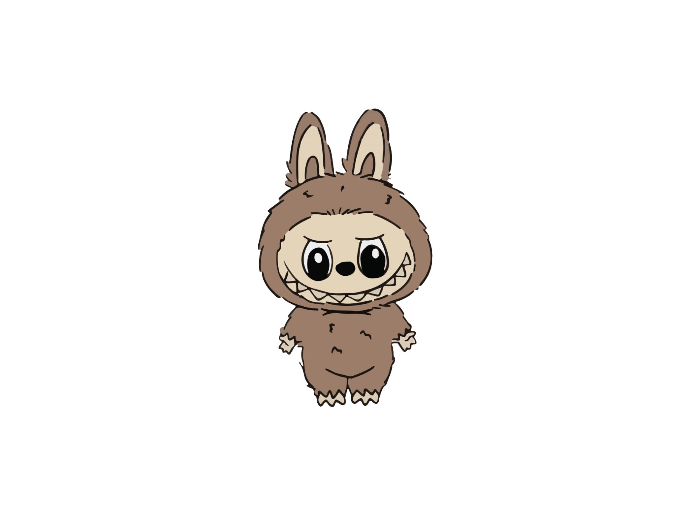

Every blind box characters carries a uniquely crafted story waiting to be read. Some stories are quiet and mundane, others are bittersweet, and a few gently tug at the heart. Each figures is more than just a toy and a collectible, they're tiny worlds, waiting for someone to notice and care enough to listen.